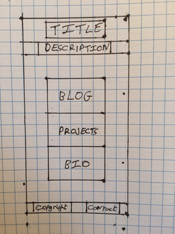

A resposive website is a site that will automatically display its content to fit the size of the screen it is being viewed on. Originally sites were designed to be viewed on a monitor or laptop but with the introduction of tablets and then the smart phone, sites had to be adapted to display properly on smaller screens. Initially different pages were served up according to the device type but now resposive websites are used where the site is designed to adapt to the size of the screen. It achieves this by using media queries to determine the size of the screen and then use the appropriate style so that the content is displayed to fit. It is important because smart phones are now the most popular way to view the internet and they come in many different sizes which need to be accomodated.
Mobile first design is where the site is designed to suit mobiles first. This is so that all the components and important content are designed to work well on a small screen. Then the site can be expanded with less important content for bigger screens. Again this is a response to the proliferation of smart phones and the fact that they are now the most popular way to access the internet.
Frameworks are a collection of production ready HTML/CSS/JavaScript components that can be used to design a responsive site. The pros are that they take a lot of the overhead and possible complexity out of building a site as the design just has to be fitted into the framework.The cons are that the design can be constricted by the framework.
A wireframe is a basic design for a website page, composed of a series of boxes showing the main components and where they appear. It is used as an aid to design the page and to give a blue print for the coder. Below are my wirefames for my blog site.
My biggest problem with implementing the wireframe was my unfamiliarity with the skeleton framework. Although my design was quite simple I still had issues with elements being positioned where I wanted them. However although it took a while I did succeed in getting most of it and I'm sure with more practice it will become easier.